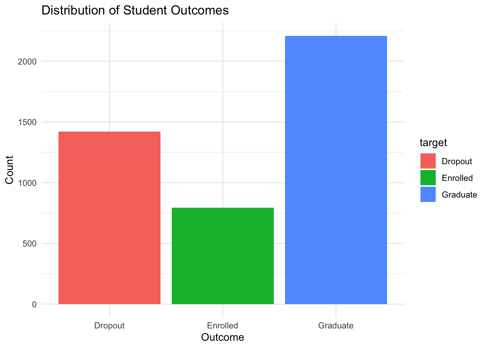
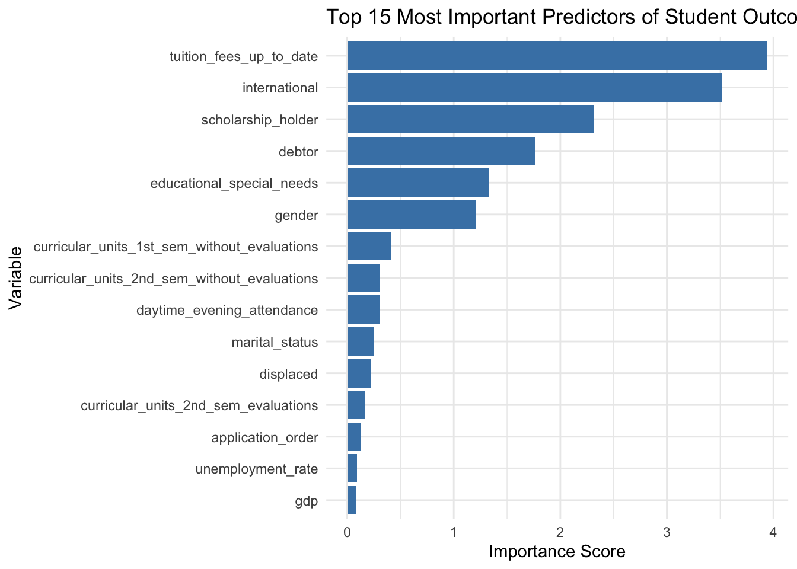
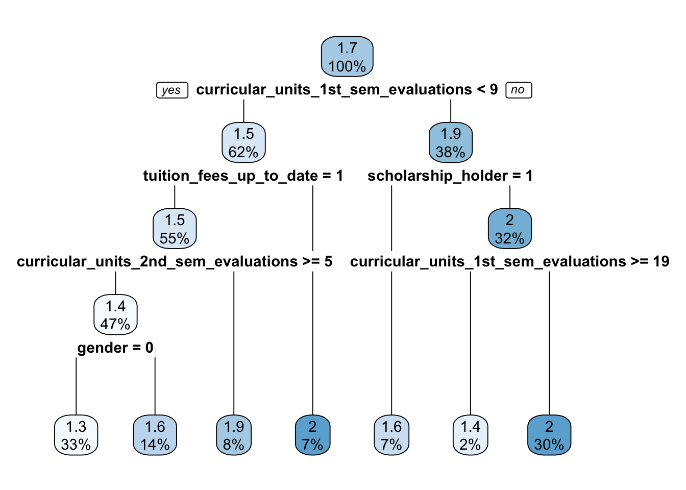
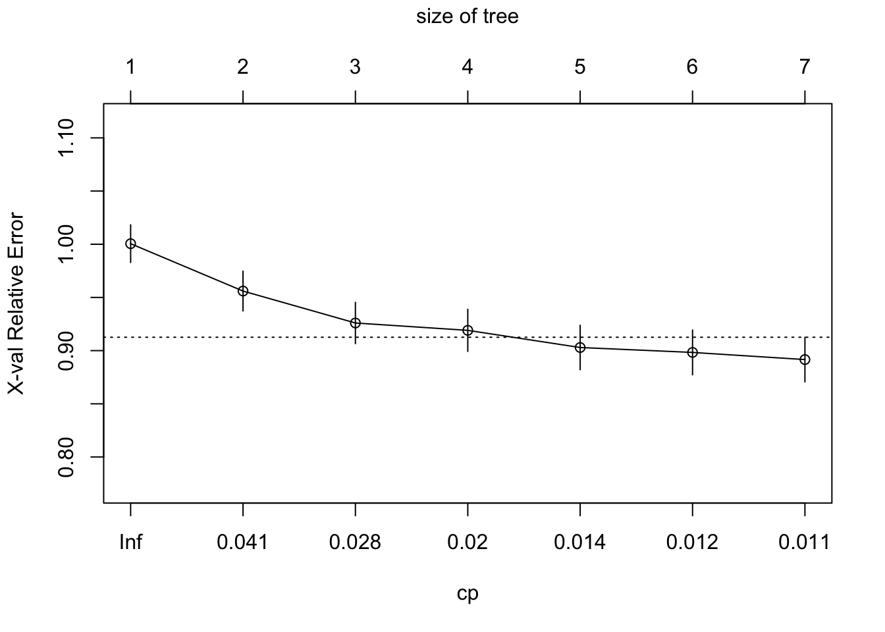
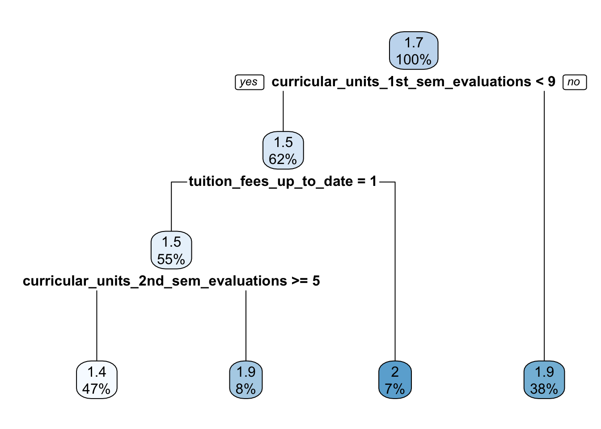
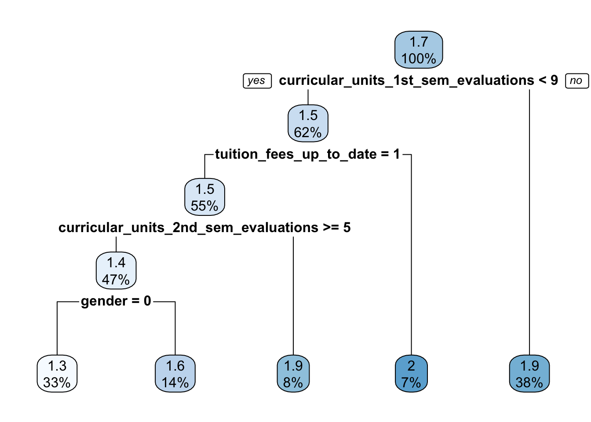

Research Question: What are the biggest contributors to student academic dropout and failure in higher education?
Libraries
# set up the librarieslibrary(tidyverse)
── Attaching core tidyverse packages ──────────────────────── tidyverse 2.0.0 ──
✔ dplyr 1.2.0 ✔ readr 2.1.5
✔ forcats 1.0.1 ✔ stringr 1.5.2
✔ ggplot2 4.0.2 ✔ tibble 3.3.0
✔ lubridate 1.9.4 ✔ tidyr 1.3.1
✔ purrr 1.1.0
── Conflicts ────────────────────────────────────────── tidyverse_conflicts() ──
✖ dplyr::filter() masks stats::filter()
✖ dplyr::lag() masks stats::lag()
ℹ Use the conflicted package (<http://conflicted.r-lib.org/>) to force all conflicts to become errors
library(readxl) library(here) # sets path to your folder directory
here() starts at /Users/jsupeyo/Documents/MIE_622_Group_Project/mie_622_group_project
library(leaps) # for variable selection methodslibrary(ggplot2)library(caret)
Loading required package: lattice
Attaching package: 'caret'
The following object is masked from 'package:purrr':
lift
library(nnet) # for multinomial logistic regressionlibrary(pROC) # for ROC curve
Type 'citation("pROC")' for a citation.
Attaching package: 'pROC'
The following objects are masked from 'package:stats':
cov, smooth, var
library(car) # for stress-testing regression models
Loading required package: carData
Attaching package: 'car'
The following object is masked from 'package:dplyr':
recode
The following object is masked from 'package:purrr':
some
library(rpart) # for regression treeslibrary(rpart.plot) # for regression tree plotlibrary(vip) # for feature importance
Attaching package: 'vip'
The following object is masked from 'package:utils':
vi
library(randomForest)
randomForest 4.7-1.2
Type rfNews() to see new features/changes/bug fixes.
Attaching package: 'randomForest'
The following object is masked from 'package:dplyr':
combine
The following object is masked from 'package:ggplot2':
margin
library(janitor) # to clean messy column names
Attaching package: 'janitor'
The following objects are masked from 'package:stats':
chisq.test, fisher.test
library(knitr) # to convert from qmd to r script
Data exploration
# load the datapj_data <-read_xlsx(here("data", "project_data.xlsx")) # the data file is in a folder named 'data'head(pj_data)
tibble [4,424 × 37] (S3: tbl_df/tbl/data.frame)
$ Marital status : num [1:4424] 1 1 1 1 2 2 1 1 1 1 ...
$ Application mode : num [1:4424] 17 15 1 17 39 39 1 18 1 1 ...
$ Application order : num [1:4424] 5 1 5 2 1 1 1 4 3 1 ...
$ Course : num [1:4424] 171 9254 9070 9773 8014 ...
$ Daytime/evening attendance : num [1:4424] 1 1 1 1 0 0 1 1 1 1 ...
$ Previous qualification : num [1:4424] 1 1 1 1 1 19 1 1 1 1 ...
$ Previous qualification (grade) : num [1:4424] 122 160 122 122 100 ...
$ Nacionality : num [1:4424] 1 1 1 1 1 1 1 1 62 1 ...
$ Mother's qualification : num [1:4424] 19 1 37 38 37 37 19 37 1 1 ...
$ Father's qualification : num [1:4424] 12 3 37 37 38 37 38 37 1 19 ...
$ Mother's occupation : num [1:4424] 5 3 9 5 9 9 7 9 9 4 ...
$ Father's occupation : num [1:4424] 9 3 9 3 9 7 10 9 9 7 ...
$ Admission grade : num [1:4424] 127 142 125 120 142 ...
$ Displaced : num [1:4424] 1 1 1 1 0 0 1 1 0 1 ...
$ Educational special needs : num [1:4424] 0 0 0 0 0 0 0 0 0 0 ...
$ Debtor : num [1:4424] 0 0 0 0 0 1 0 0 0 1 ...
$ Tuition fees up to date : num [1:4424] 1 0 0 1 1 1 1 0 1 0 ...
$ Gender : num [1:4424] 1 1 1 0 0 1 0 1 0 0 ...
$ Scholarship holder : num [1:4424] 0 0 0 0 0 0 1 0 1 0 ...
$ Age at enrollment : num [1:4424] 20 19 19 20 45 50 18 22 21 18 ...
$ International : num [1:4424] 0 0 0 0 0 0 0 0 1 0 ...
$ Curricular units 1st sem (credited) : num [1:4424] 0 0 0 0 0 0 0 0 0 0 ...
$ Curricular units 1st sem (enrolled) : num [1:4424] 0 6 6 6 6 5 7 5 6 6 ...
$ Curricular units 1st sem (evaluations) : num [1:4424] 0 6 0 8 9 10 9 5 8 9 ...
$ Curricular units 1st sem (approved) : num [1:4424] 0 6 0 6 5 5 7 0 6 5 ...
$ Curricular units 1st sem (grade) : num [1:4424] 0 14 0 13.4 12.3 ...
$ Curricular units 1st sem (without evaluations): num [1:4424] 0 0 0 0 0 0 0 0 0 0 ...
$ Curricular units 2nd sem (credited) : num [1:4424] 0 0 0 0 0 0 0 0 0 0 ...
$ Curricular units 2nd sem (enrolled) : num [1:4424] 0 6 6 6 6 5 8 5 6 6 ...
$ Curricular units 2nd sem (evaluations) : num [1:4424] 0 6 0 10 6 17 8 5 7 14 ...
$ Curricular units 2nd sem (approved) : num [1:4424] 0 6 0 5 6 5 8 0 6 2 ...
$ Curricular units 2nd sem (grade) : num [1:4424] 0 13.7 0 12.4 13 ...
$ Curricular units 2nd sem (without evaluations): num [1:4424] 0 0 0 0 0 5 0 0 0 0 ...
$ Unemployment rate : num [1:4424] 10.8 13.9 10.8 9.4 13.9 16.2 15.5 15.5 16.2 8.9 ...
$ Inflation rate : num [1:4424] 1.4 -0.3 1.4 -0.8 -0.3 0.3 2.8 2.8 0.3 1.4 ...
$ GDP : num [1:4424] 1.74 0.79 1.74 -3.12 0.79 -0.92 -4.06 -4.06 -0.92 3.51 ...
$ Target : chr [1:4424] "Dropout" "Graduate" "Dropout" "Graduate" ...
summary(pj_data)
Marital status Application mode Application order Course
Min. :1.000 Min. : 1.00 Min. :0.000 Min. : 33
1st Qu.:1.000 1st Qu.: 1.00 1st Qu.:1.000 1st Qu.:9085
Median :1.000 Median :17.00 Median :1.000 Median :9238
Mean :1.179 Mean :18.67 Mean :1.728 Mean :8857
3rd Qu.:1.000 3rd Qu.:39.00 3rd Qu.:2.000 3rd Qu.:9556
Max. :6.000 Max. :57.00 Max. :9.000 Max. :9991
Daytime/evening attendance Previous qualification
Min. :0.0000 Min. : 1.000
1st Qu.:1.0000 1st Qu.: 1.000
Median :1.0000 Median : 1.000
Mean :0.8908 Mean : 4.578
3rd Qu.:1.0000 3rd Qu.: 1.000
Max. :1.0000 Max. :43.000
Previous qualification (grade) Nacionality Mother's qualification
Min. : 95.0 Min. : 1.000 Min. : 1.00
1st Qu.:125.0 1st Qu.: 1.000 1st Qu.: 2.00
Median :133.1 Median : 1.000 Median :19.00
Mean :132.6 Mean : 1.873 Mean :19.56
3rd Qu.:140.0 3rd Qu.: 1.000 3rd Qu.:37.00
Max. :190.0 Max. :109.000 Max. :44.00
Father's qualification Mother's occupation Father's occupation Admission grade
Min. : 1.00 Min. : 0.00 Min. : 0.00 Min. : 95.0
1st Qu.: 3.00 1st Qu.: 4.00 1st Qu.: 4.00 1st Qu.:117.9
Median :19.00 Median : 5.00 Median : 7.00 Median :126.1
Mean :22.28 Mean : 10.96 Mean : 11.03 Mean :127.0
3rd Qu.:37.00 3rd Qu.: 9.00 3rd Qu.: 9.00 3rd Qu.:134.8
Max. :44.00 Max. :194.00 Max. :195.00 Max. :190.0
Displaced Educational special needs Debtor
Min. :0.0000 Min. :0.00000 Min. :0.0000
1st Qu.:0.0000 1st Qu.:0.00000 1st Qu.:0.0000
Median :1.0000 Median :0.00000 Median :0.0000
Mean :0.5484 Mean :0.01153 Mean :0.1137
3rd Qu.:1.0000 3rd Qu.:0.00000 3rd Qu.:0.0000
Max. :1.0000 Max. :1.00000 Max. :1.0000
Tuition fees up to date Gender Scholarship holder Age at enrollment
Min. :0.0000 Min. :0.0000 Min. :0.0000 Min. :17.00
1st Qu.:1.0000 1st Qu.:0.0000 1st Qu.:0.0000 1st Qu.:19.00
Median :1.0000 Median :0.0000 Median :0.0000 Median :20.00
Mean :0.8807 Mean :0.3517 Mean :0.2484 Mean :23.27
3rd Qu.:1.0000 3rd Qu.:1.0000 3rd Qu.:0.0000 3rd Qu.:25.00
Max. :1.0000 Max. :1.0000 Max. :1.0000 Max. :70.00
International Curricular units 1st sem (credited)
Min. :0.00000 Min. : 0.00
1st Qu.:0.00000 1st Qu.: 0.00
Median :0.00000 Median : 0.00
Mean :0.02486 Mean : 0.71
3rd Qu.:0.00000 3rd Qu.: 0.00
Max. :1.00000 Max. :20.00
Curricular units 1st sem (enrolled) Curricular units 1st sem (evaluations)
Min. : 0.000 Min. : 0.000
1st Qu.: 5.000 1st Qu.: 6.000
Median : 6.000 Median : 8.000
Mean : 6.271 Mean : 8.299
3rd Qu.: 7.000 3rd Qu.:10.000
Max. :26.000 Max. :45.000
Curricular units 1st sem (approved) Curricular units 1st sem (grade)
Min. : 0.000 Min. : 0.00
1st Qu.: 3.000 1st Qu.:11.00
Median : 5.000 Median :12.29
Mean : 4.707 Mean :10.64
3rd Qu.: 6.000 3rd Qu.:13.40
Max. :26.000 Max. :18.88
Curricular units 1st sem (without evaluations)
Min. : 0.0000
1st Qu.: 0.0000
Median : 0.0000
Mean : 0.1377
3rd Qu.: 0.0000
Max. :12.0000
Curricular units 2nd sem (credited) Curricular units 2nd sem (enrolled)
Min. : 0.0000 Min. : 0.000
1st Qu.: 0.0000 1st Qu.: 5.000
Median : 0.0000 Median : 6.000
Mean : 0.5418 Mean : 6.232
3rd Qu.: 0.0000 3rd Qu.: 7.000
Max. :19.0000 Max. :23.000
Curricular units 2nd sem (evaluations) Curricular units 2nd sem (approved)
Min. : 0.000 Min. : 0.000
1st Qu.: 6.000 1st Qu.: 2.000
Median : 8.000 Median : 5.000
Mean : 8.063 Mean : 4.436
3rd Qu.:10.000 3rd Qu.: 6.000
Max. :33.000 Max. :20.000
Curricular units 2nd sem (grade)
Min. : 0.00
1st Qu.:10.75
Median :12.20
Mean :10.23
3rd Qu.:13.33
Max. :18.57
Curricular units 2nd sem (without evaluations) Unemployment rate
Min. : 0.0000 Min. : 7.60
1st Qu.: 0.0000 1st Qu.: 9.40
Median : 0.0000 Median :11.10
Mean : 0.1503 Mean :11.57
3rd Qu.: 0.0000 3rd Qu.:13.90
Max. :12.0000 Max. :16.20
Inflation rate GDP Target
Min. :-0.800 Min. :-4.060000 Length:4424
1st Qu.: 0.300 1st Qu.:-1.700000 Class :character
Median : 1.400 Median : 0.320000 Mode :character
Mean : 1.228 Mean : 0.001969
3rd Qu.: 2.600 3rd Qu.: 1.790000
Max. : 3.700 Max. : 3.510000
# Factorize the categorical variables# 'target' is the only categorical variablecol <-c("target")pj_data [, col] <-lapply(pj_data[, col], factor)str(pj_data) # confirm categorization of the column
For our research question, “What are the biggest contributors to student academic dropout and failure in higher education?”, we will take ‘target’ as the dependent (Y) variable that we can predict using the other variables as the independent variables.
# Let's take a look at the distribution of our variable of interestpj_data |>ggplot(aes(x =target, fill = target))+geom_bar()+theme_minimal()+labs( title ="Distribution of Student Outcomes",x ="Outcome",y ="Count")

Logistic Regression Model
Let’s develop a logistic regression model to predict student academic outcome.
Since target is a categorical variable (3 classes: Dropout, Graduate, Enrolled), we cannot use linear regression as it would require a continuous numeric outcome. Instead, we will use a logistic regression (mulitnomial).
Also, for a multinomial logistic regression we need to identify the reference level in the dependent variable. Based on our research question, ’ What contributes to dropout?‘, we will set ’Graduate’ as the reference level in the ‘target’ variable.
# set reference levelpj_data$target <-relevel(pj_data$target, ref ="Graduate" )# confirmlevels(pj_data$target)
[1] "Graduate" "Dropout" "Enrolled"
Since the outcome (Y) is ‘target’ what we want to predict; Let’s split the data 70% training and 30% testing
Model training and testing
set.seed(123) # setting a seed for reproducibility of the random splitindex <-createDataPartition(pj_data$`target`, p =0.3, list =FALSE)training_data <- pj_data[-index, ]testing_data <- pj_data[index, ]
Check summary statistics of the outcome “target” in training and testing data
Before building the model, let’s check whether any of our independent variables are highly correlated with each other. If two variables are almost identical, it will confuse the model and inflate the standard errors.
We will use the Variance Inflation Factor(VIF), whereby if vif = 1, we have no correlation at atll, VIF is 1- 5, we moderate correlation (fine), and VIF 5 - 10 we have a higher correlation.
# We first fit a temporary linear model just to extract VIF values - this # is a common workaround since vif() requires a linear model objecttemp_model <-lm(as.numeric(target) ~ ., data = training_data)vif_values <-vif(temp_model) # get the vif values from the modelvif_values[vif_values >5] # show variables that have vif values greater
# than 5 (potential collinearity issue)# remove the flagged variables from both training and testing data setstraining_data <- training_data |>select (-c("mothers_occupation", "fathers_occupation","curricular_units_1st_sem_credited","curricular_units_1st_sem_enrolled","curricular_units_1st_sem_approved","curricular_units_1st_sem_grade","curricular_units_2nd_sem_credited","curricular_units_2nd_sem_enrolled","curricular_units_2nd_sem_approved","curricular_units_2nd_sem_grade" ))testing_data <- testing_data |>select(-c("mothers_occupation", "fathers_occupation","curricular_units_1st_sem_credited","curricular_units_1st_sem_enrolled","curricular_units_1st_sem_approved","curricular_units_1st_sem_grade","curricular_units_2nd_sem_credited","curricular_units_2nd_sem_enrolled","curricular_units_2nd_sem_approved","curricular_units_2nd_sem_grade"))
We have 10 independent variables that have vif values above 5 where 6 of the variables have vif values above 10. For the variables with a vif above 10 we will remove one of them say ‘Curricular units 1st sem (enrolled)’.
We can now develop a logistic regression model to predict ‘target’ using all other independent variables.
model_0 <-multinom(target~., data = training_data, maxit =500)
# weights: 84 (54 variable)
initial value 3400.205033
iter 10 value 3000.768642
iter 20 value 2802.286112
iter 30 value 2734.939167
iter 40 value 2615.957680
iter 50 value 2537.109560
iter 60 value 2529.303157
final value 2529.302441
converged
# maxit = 500 gives the optimizer more iterations to convergesummary(model_0)
Let’s check the model fit. We will use AIC and Pseudo R-squared since a logistic regression doesn’t have R-squared. Rule of thumb, a lower AIC is better and a McFadden’s Pseudo R squared of between 0.2 - 0.4 is considered a good fit for logistic regression.
# model fit: AIC(model_0) # lower AIC is better
[1] 5166.605
# McFadden's Pseudo R-squared# Formula: 1 - (log-likelihood of full model / log-likelihood of null model)null_model <-multinom(target ~1, data = training_data, maxit =500)
# weights: 6 (2 variable)
initial value 3400.205033
final value 3155.905121
converged
Our AIC is 3542.901, we will use this as the baseline once we start comparing with other models. Nevertheless, our McFadden R-squared is 0.46, on a scale of 0 to 1, this is a strong model considering an excellent model has values between 0.2 and 0.4.
Model Evaluation
Let’s evaluate the model using a confusion matrix
# make predictions on the test datapredicted_class <-predict(model_0, newdata = testing_data) # confusion matrixconf_matrix <-confusionMatrix(predicted_class, testing_data$target)conf_matrix
Confusion Matrix and Statistics
Reference
Prediction Graduate Dropout Enrolled
Graduate 576 160 173
Dropout 64 250 52
Enrolled 23 17 14
Overall Statistics
Accuracy : 0.6321
95% CI : (0.6055, 0.658)
No Information Rate : 0.4989
P-Value [Acc > NIR] : < 2.2e-16
Kappa : 0.3464
Mcnemar's Test P-Value : < 2.2e-16
Statistics by Class:
Class: Graduate Class: Dropout Class: Enrolled
Sensitivity 0.8688 0.5855 0.05858
Specificity 0.5000 0.8714 0.96330
Pos Pred Value 0.6337 0.6831 0.25926
Neg Pred Value 0.7929 0.8162 0.82353
Prevalence 0.4989 0.3213 0.17983
Detection Rate 0.4334 0.1881 0.01053
Detection Prevalence 0.6840 0.2754 0.04063
Balanced Accuracy 0.6844 0.7284 0.51094
From the confusion matrix results we see that our model is able to correctly predict the outcome 77% of the time (accuracy) while catching each outcome positively in each class (sensitivity/ recall) as follows: 94% of the time in the Graduate Class, 78% of the time in the Dropout Class, and 27% of the time in the Enrolled class.
To get our biggest contributors to student dropout, we will exponentiate the coefficients from the model to get the Relative Risk Ratios(RRR) - similar to odds ratios.
If RRR = 1.0 -> no effect
if RRR > 1.0 -> that variable increases the probability of being in that class vs the reference class (Graduate)
if RRR < 1.0 -> that variable increases the probability of being in that class vs the reference class (Graduate)
For example: if the RRR for “Curricular units 1st sem (approved)” in the Graduate vs. Dropout row is 1.8, it means a student who passes one more unit in the first semester is 1.8× more likely to dropout than to graduate.
Variable importance: Which predictors matter most?
importance <-varImp(model_0)# rank the variables by importanceimportance_df <- importance |>rownames_to_column(("Variable")) |>arrange(desc(Overall))# view the variables dfhead(importance_df)
# plot the variablesimportance_df |>slice_head(n =15) |>ggplot(aes(x =reorder(Variable,Overall), y = Overall))+geom_col(fill ="steelblue") +coord_flip()+theme_minimal()+labs(title ="Top 15 Most Important Predictors of Student Outcome",x ="Variable",y ="Importance Score")

Classification tree model: (using method= “class”)
# classification tree modelmodel1 <-rpart(formula = target ~ .-target, data= training_data, method="class")# plot the modelrpart.plot(model1)
First value in each node = Predicted category (Low or High) Second value in each node = Proportion of non-baseline category of the outcome Third value in each node = Percent of data that falls in this node after the split (percent of data that follows this particular path in the tree)
Model Evaluation: Model 1
# make predictions on the test datapredicted_class_1 <-predict(model1, newdata = testing_data) testing_data$predicted_class_1 <-predict(model1, newdata = testing_data, type ="class")head(testing_data)
Confusion Matrix and Statistics
Reference
Prediction Graduate Dropout Enrolled
Graduate 635 227 220
Dropout 28 200 19
Enrolled 0 0 0
Overall Statistics
Accuracy : 0.6283
95% CI : (0.6017, 0.6543)
No Information Rate : 0.4989
P-Value [Acc > NIR] : < 2.2e-16
Kappa : 0.3041
Mcnemar's Test P-Value : < 2.2e-16
Statistics by Class:
Class: Graduate Class: Dropout Class: Enrolled
Sensitivity 0.9578 0.4684 0.0000
Specificity 0.3288 0.9479 1.0000
Pos Pred Value 0.5869 0.8097 NaN
Neg Pred Value 0.8866 0.7902 0.8202
Prevalence 0.4989 0.3213 0.1798
Detection Rate 0.4778 0.1505 0.0000
Detection Prevalence 0.8141 0.1859 0.0000
Balanced Accuracy 0.6433 0.7081 0.5000
From the results, we see our model is 75% accurate in predicted which students will graduate! In addition, our kappa is 0.59 which is a moderate to substantial measure that our accuracy isn’t just a fluke of having more ‘Graduate’ data points.
Our Model’s sensitivity is 89% for ‘Graduate Category’ which means 89% of the time, it positively identifies students who will graduate, and 76% of the time it will identify students who will drop out or at high risk of dropping out which is a solid detection rate. Nevertheless, the model struggles to capture students who fall in the ‘Enrolled class’ (37.2%) - this is most likely because the ‘Enrolled Class’ is a middle ground category, so its features overlap with both other categories.
model2 <-rpart(formula = target ~ ., data = training_data, method ="anova")# we use 'anova' when developing a regression treerpart.plot(model2)

Model Evaluation
# make predictions on the test datapredicted_class_2 <-predict(model2, newdata = testing_data)# Apply the model to testing datatesting_data$predicted_class_2 <-predict(model2, newdata = testing_data, type ="vector")head(data.frame(testing_data$target, testing_data$predicted_class_2))
This is to help in visualizing cross validation error for different complexity parameter (cp) values
plotcp(model2)

plotcp() illustrates the set of possible cost-complexity (cp) values on x-axis y-axis shows relative cross validation error for various penalty values (cp values) horizontal line is drawn 1 standard error above the minimum of the curve
Each penalty term corresponds to a “size of tree” which is the number of terminal nodes Smaller penalty (cp values) –> larger trees Larger penalty (cp values) –> smaller trees A good choice of cp for pruning is often the leftmost value for which the mean lies below the horizontal line Here: cp = 0.022 tree size of 3 (terminal nodes) provides optimal cross validation
Pruned model using cp = 0.055
pruned1 <-rpart(formula = target ~ .,data= training_data, method ="anova", control =list(cp =0.022, xval =10)) # xval = 10 is a common validation numberrpart.plot(pruned1)

We can try a different cp-value such as 0.014 that has more trees (5)
pruned2 <-rpart(formula = target ~ .,data= training_data, method ="anova", control =list(cp =0.014, xval =10)) # xval = 10 is a common validation numberrpart.plot(pruned2)

Pruning and Random Forests (RF)
Recall: Arguments of randomForest() function
mtry = nr of variables to pick each time we build a regression tree
ntree = how many trees we want
maxnodes = how many nodes we want to keep
importance enables the algorithm to calculate variable importance
RF model 1
rf_model1 <-randomForest(target ~ ., data=training_data, mtry =8, importance=TRUE)# The default mtry for classification is the square root of the # number of predictors. We have 36 predictors, therefore 9 would # be a good value for mtry.rf_model1
Call:
randomForest(formula = target ~ ., data = training_data, mtry = 8, importance = TRUE)
Type of random forest: classification
Number of trees: 500
No. of variables tried at each split: 8
OOB estimate of error rate: 30.73%
Confusion matrix:
Graduate Dropout Enrolled class.error
Graduate 1358 107 81 0.1216041
Dropout 261 652 81 0.3440644
Enrolled 289 132 134 0.7585586
The high error rate for the Enrolled class (61.8%) stands out. While the model is great at identifying students who graduate, it is struggling significantly to distinguish between students who are still Enrolled and those who have Dropped out.
Let’s check how the Target class is balanced as any inbalance in the ‘Target’ categories could be causing this high error rate!
table(training_data$target)
Graduate Dropout Enrolled
1546 994 555
The table confirms a significant class imbalance: we have nearly three times as many Graduates as Enrolled students. The model is biased toward the “Graduate” class because it has the most observations (1,546). The “Enrolled” class is the smallest, leading the model to misclassify 224 Enrolled students as Graduates!
Let’s try a Balanced Random Forest by sampling an equal number of rows from each class when building the trees.
# Let's set the sample size based on our smallest class (Enrolled = 555)# This forces the model to treat all classes with equal weightrf_model1_balanced <-randomForest( target ~ ., data = training_data, mtry =8, importance =TRUE,sampsize =c("Graduate"=555, "Dropout"=555, "Enrolled"=555))print(rf_model1_balanced)
Call:
randomForest(formula = target ~ ., data = training_data, mtry = 8, importance = TRUE, sampsize = c(Graduate = 555, Dropout = 555, Enrolled = 555))
Type of random forest: classification
Number of trees: 500
No. of variables tried at each split: 8
OOB estimate of error rate: 32.83%
Confusion matrix:
Graduate Dropout Enrolled class.error
Graduate 1146 135 265 0.2587322
Dropout 166 637 191 0.3591549
Enrolled 154 105 296 0.4666667
This is a much better balance! By downsampling, we cut the Enrolled error rate from 67% down to 44%.
While the overall out-of-bag (OOB) error rose slightly (from 22.8% to 24.5%), the model is now significantly more “honest” about the Enrolled class. It’s no longer just defaulting to the majority labels.
Looking at the confusion matrix:
Enrolled vs. Graduate: 187 Graduates were mistaken for Enrolled, and 150 Enrolled were mistaken for Graduates. These two classes are still bleeding into each other, likely because their academic data (grades/credits) looks very similar.
The Trade-off: The Graduate error doubled (from ~6% to 15%). This is the standard “price” of balancing; the model is no longer biased toward the majority, so it makes more mistakes there to get the minority class right.
Model Evaluation
# predict using the balanced random forest modelpredicted_class_3 <-predict(rf_model1_balanced, newdata = testing_data)# confusion matrixbrf_cm <-confusionMatrix(predicted_class_3, testing_data$target)brf_cm
Confusion Matrix and Statistics
Reference
Prediction Graduate Dropout Enrolled
Graduate 491 69 73
Dropout 51 278 34
Enrolled 121 80 132
Overall Statistics
Accuracy : 0.678
95% CI : (0.6521, 0.703)
No Information Rate : 0.4989
P-Value [Acc > NIR] : < 2.2e-16
Kappa : 0.4885
Mcnemar's Test P-Value : 3.012e-07
Statistics by Class:
Class: Graduate Class: Dropout Class: Enrolled
Sensitivity 0.7406 0.6511 0.55230
Specificity 0.7868 0.9058 0.81560
Pos Pred Value 0.7757 0.7658 0.39640
Neg Pred Value 0.7529 0.8458 0.89257
Prevalence 0.4989 0.3213 0.17983
Detection Rate 0.3695 0.2092 0.09932
Detection Prevalence 0.4763 0.2731 0.25056
Balanced Accuracy 0.7637 0.7784 0.68395
Our Enrolled sensitivity is now nearly 60% (59.8%) which means we are correctly identifying nearly 60% of the Enrolled Students. This is a massive jump from the 27% our logistic regression was catching. Our Kappa is 0.6448 in which a Kappa above 0.60 is generally considered a substantial agreement that our model’s predictions are reliable and not just due to random chance or class size bias. Lastly, our Dropout class prediction is high 0.9457, meaning it is incredibly good at not falsely accusing a student of dropping out if they aren’t actually doing so.
Using the importance() function, we can view the importance of each importance() variable
Looking at the variable importance plot and data, ‘curricular_units_2nd_sem_approved’ is the most important variable in predicting outcomes for our model. It has a massive Mean Decrease Gini of 134.2 and Mean Decrease Accuracy of 57.1, meaning it is the most critical variable in predicting whether a student graduates or drops out.
In addition, the top predictors are almost all related to the 2nd semester:
curricular_units_2nd_sem_approved
curricular_units_2nd_sem_grade
curricular_units_1st_sem_approved
If a student is failing to get credits approved in the second semester, the model is very confident they will drop out.
Tuition is the most important non-academic variable. It has a high Dropout specific accuracy score (40.0), suggesting that being behind on fees is a huge red flag for immediate dropout.
The ‘Enrolled’ column in the importance table has much lower values than other classes columns. This explains why our ‘Enrolled’ error is still high! The model has great features of identifying student success (Graduate) or failure (Dropout) but the features aren’t very good at identifying enrolled students i.e., the ‘in-between’.
Variables such as ‘international’, ‘educational_special_needs’, and ‘application_order’ have near zero importance. They are adding noise to our random forest.
Recap: When running the variable importance under our logistic regression model, the variable ‘international’ came up as the most important variable for predicting the outcome. However, we have seen with the random forest model that this variable ‘international’ only adds noise to the model! This is because of two things: non linear relationships and the importance scale.
Nonlinear vs Linear: Logistic regression looks for a straight line relationship. Therefore, if being an international student has a consistent, small impact across the board, then the regression model might flag it as highly significant. However, the Random Forest, looks for ‘splits’. If ‘curricular_units_2nd_sem_approved’ is a much more powerful way to divide the data into groups, the Random Forest will prioritize it and ignore ‘weaker’ signals like ‘international’.
Importance Scale: In our variable importance plot in the logistic regression, our scale of importance only goes up to 4 whereas in the Random Forest, the Gini importance for academic units went up to 134. This suggests that while ‘international’ is statistically significant in a regression, its actual predictive power is tiny compared to grades and credits!
Conclusion
Looking at the models above: Multinomial logistic regression, Classification tree, Regression tree, and Random Forest, there is a general theme of variables with ‘grades’ and ‘credits’ having more predictive power in determining whether a student will graduate.
Looking at the model results, Multinomial logistic regression has the highest overall accuracy (76.9%) of all the models, but it also the worst at identfying the ‘Enrolled’ group (Enrolled sensitivity: 27.6%). The logistic regression is very good at chasing the accuracy by being extremely good at predicting the majority class (Graduate Sensitivity: 93.6%) while ignoring the minority sensitivity (Enrolled Sensitivity: 27.6%).
Essentially, our logistic model is biased. It only correctly identified 66 enrolled students and misclassifies 103 enrolled students as Graduates. If we used this in a school, we would miss nearly 73% of the students who are currently ‘stuck’ in enrollment and might need help.
Looking at the balanced accuracy tells the truth: The balanced accuracy for the Enrolled class in the logistic model is 60.6%, which is lower than the Classification tree model (64.4%) and much lower than that of our Balanced Random Forest (73.7%). Therefore, the Balanced Random Forest is much better as it has a higher accuracy for the minority class across the different models.
The balanced Random Forest is our most fair and useful model as it provides the best ‘safety net’ for the Enrolled students without sacrificing too much performance on Graduates and Dropouts. The logistic regression remains the most accurate overall.
Model Comparison
# Let's create a data frame with the Sensitivity scores we've gatheredcomparison_data <-data.frame(Model =c("Multinomial Logistic", "Classification Tree", "Balanced Random Forest"),Graduate =c(0.937, 0.890, 0.847),Dropout =c(0.785, 0.759, 0.730),Enrolled =c(0.276, 0.372, 0.544) # RF scores from the balanced OOB)# Reshape for plottingplot_data <-pivot_longer(comparison_data, cols =c("Graduate", "Dropout", "Enrolled"), names_to ="Class", values_to ="Sensitivity")# Generate a comparison plotggplot(plot_data, aes(x = Class, y = Sensitivity, fill = Model)) +geom_bar(stat ="identity", position ="dodge") +theme_minimal() +labs(title ="Model Comparison: Sensitivity by Student Outcome",subtitle ="The Balanced Random Forest is the only model that effectively 'catches' Enrolled students",y ="Sensitivity (Recall)",x ="Student Status") +scale_fill_brewer(palette ="Set1") +geom_text(aes(label =round(Sensitivity, 2)), position =position_dodge(width =0.9), vjust =-0.5, size =3)